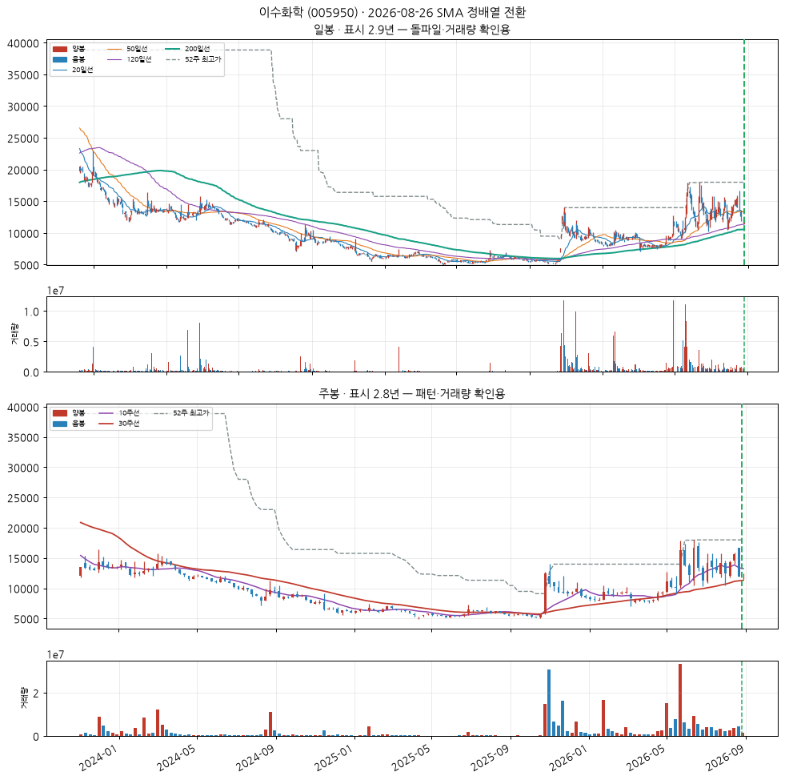
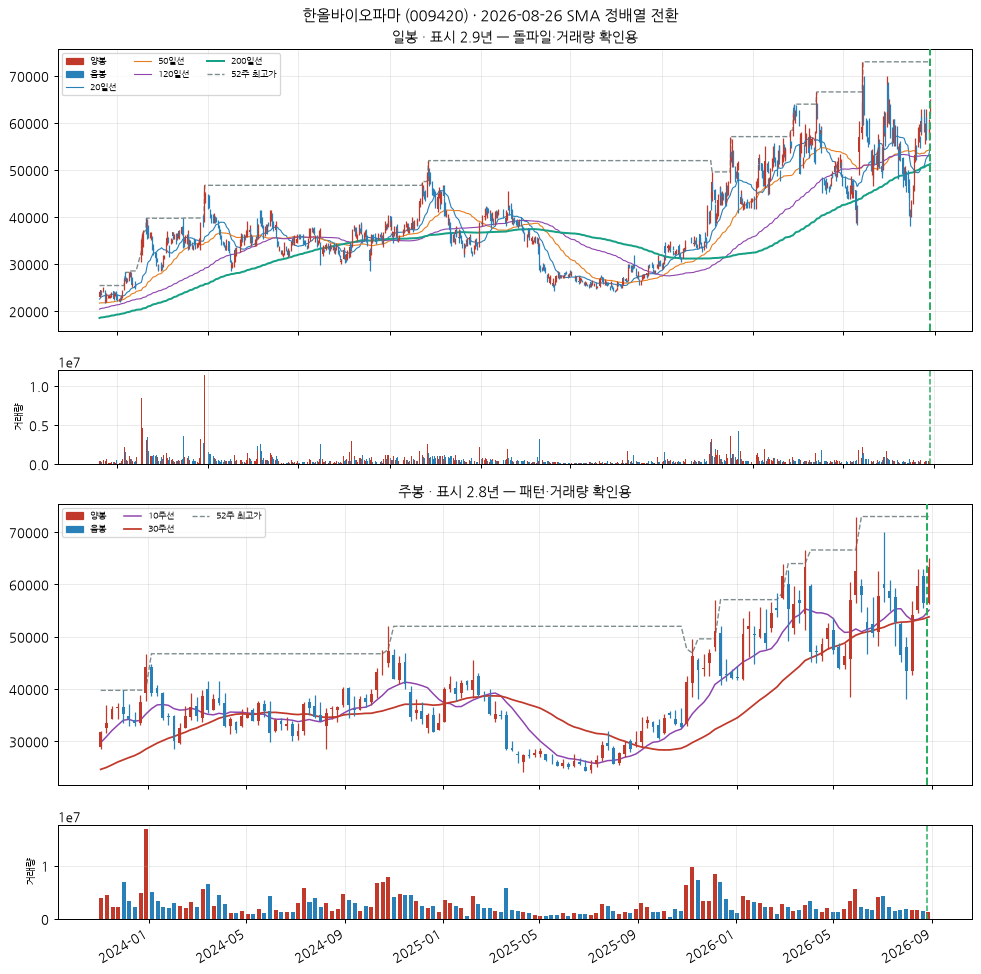
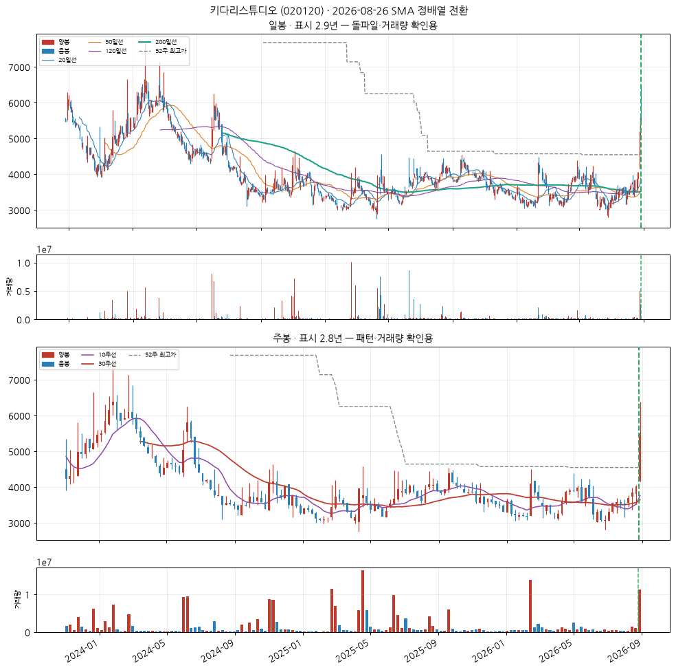
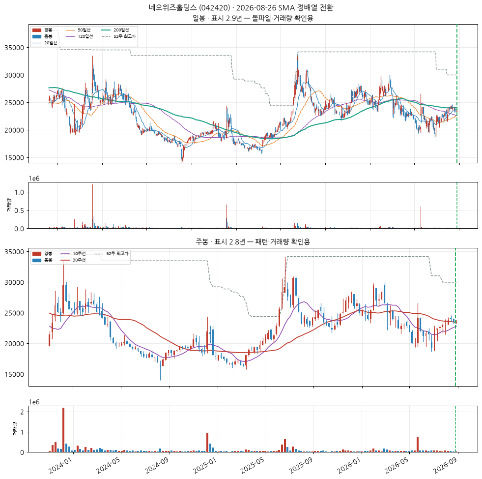

기초 화학물질 제조업
업종 참고: RS 평균 37/99(업종 중 상위 60%) · 오늘 신호 3건 · 코스피 대비 -26.3%p(126일)
🧪 자체 섹터 분류(실험적, 참고용): 전자부품 제조업 (서울바이오시스·후성 등 20종목)
섹터 내 RS 순위: 4/20위 (RS 87/99)
섹터 1~3위: 서울바이오시스(98), 후성(94), 세보엠이씨(88)
※ 자체 상관관계 계산 — 검증 시 기준업종 11개 중 8개 정확, 시간에 따라 자주 바뀔 수 있음(3개월 안정성 실측 낮음)
종가 12,070 · 거래대금 50억
정배열 1일차거래량비 0.6x정배열 후 +0.0%
손절 11,104 | 목표 14,967 | 수량 828주

CC — 분기 실적 성장 우수
2026 반기보고서(누적) · 순이익 흑자전환(+nan억원→+778억원) · EPS 흑자전환(+nan원→+2,909원) · 매출 흑자전환(+nan억원→+7,434억원)
DART 공시 기준 · 분기 단독 전년동기 대비
AA — 연간 실적 성장 미흡
2025 사업보고서(연간) · 순이익 적자확대(-382억원→-405억원) · EPS 적자축소(-2,148원→-1,279원) · 매출 -13.4%
DART 공시 기준 · 연간 전년동기 대비 · 적자폭은 줄었으나 여전히 적자 — 오닐의 이익성장 기준은 미충족
NN — 신고가·모멘텀 데이터 없음
신고가 데이터 없음
SS — 수급(거래량) 미흡
20일 평균 대비 0.63배
유통주식수·순매수 데이터는 미보유 (거래량으로만 근사)
LL — 주도주(상대강도) 우수
RS 등급 87/99 (유니버스 1951종목 중 백분위) · 지수대비 +19.0%p (126일)
상위 시가총액 유니버스 기준 — KRX 전체 대비 백분위 아님
II — 기관·외국인 수급 미흡
20일 순매수 -7.52% (거래대금 대비) · 최근절반 -12.07% vs 이전절반 +0.56% (약화) · 순매수 7일 · 누적 -136.2억원
한국투자증권 공식 API(KIS) 기준 · 기관+외국인 합산, 기타법인 제외로 거래대금은 소폭 과소추정 · 임계값은 아직 실측 검증 전 잠정치 — 수급 이력이 쌓이면 다른 지표와 같은 방식으로 구분력을 측정해 조정 예정
MM — 시장방향 미흡
KOSPI 지수가 60일선 아래
실제 매매 필터로는 미적용(표시 전용) — 종목 선별보다 지수 자체 타이밍이 더 효율적이라는 자체 검증 결과 있음 (reports/vs_kospi.md)
한올바이오파마 (009420)
신규
KOSPI
의약품 제조업
업종 참고: RS 평균 23/99(업종 중 상위 78%) · 오늘 신호 1건 · 코스피 대비 -39.7%p(126일)
🧪 자체 섹터 분류(실험적, 참고용): 자연과학 및 공학 연구개발업 (한올바이오파마·에스티팜 등 13종목)
섹터 내 RS 순위: 1/13위 (RS 64/99)
섹터 1~3위: 한올바이오파마(64), 에스티팜(22), 오스코텍(18)
※ 자체 상관관계 계산 — 검증 시 기준업종 11개 중 8개 정확, 시간에 따라 자주 바뀔 수 있음(3개월 안정성 실측 낮음)
종가 63,300 · 거래대금 315억
정배열 1일차거래량비 1.4x정배열 후 +0.0%
손절 58,236 | 목표 78,492 | 수량 157주

CC — 분기 실적 성장 미흡
2026 반기보고서(누적) · 순이익 적자확대(+nan억원→-192억원) · EPS 적자확대(+nan원→-378원)
DART 공시 기준 · 분기 단독 전년동기 대비
AA — 연간 실적 성장 미흡
2025 사업보고서(연간) · 순이익 적자확대(-18억원→-56억원) · EPS 적자확대(-36원→-109원) · 매출 +11.7%
DART 공시 기준 · 연간 전년동기 대비
NN — 신고가·모멘텀 데이터 없음
신고가 데이터 없음
SS — 수급(거래량) 양호
20일 평균 대비 1.37배
유통주식수·순매수 데이터는 미보유 (거래량으로만 근사)
LL — 주도주(상대강도) 보통
RS 등급 64/99 (유니버스 1951종목 중 백분위) · 지수대비 -6.4%p (126일)
상위 시가총액 유니버스 기준 — KRX 전체 대비 백분위 아님
II — 기관·외국인 수급 우수
20일 순매수 +9.24% (거래대금 대비) · 최근절반 +10.40% vs 이전절반 +7.81% (개선) · 순매수 16일 · 누적 +378.1억원
한국투자증권 공식 API(KIS) 기준 · 기관+외국인 합산, 기타법인 제외로 거래대금은 소폭 과소추정 · 임계값은 아직 실측 검증 전 잠정치 — 수급 이력이 쌓이면 다른 지표와 같은 방식으로 구분력을 측정해 조정 예정
MM — 시장방향 미흡
KOSPI 지수가 60일선 아래
실제 매매 필터로는 미적용(표시 전용) — 종목 선별보다 지수 자체 타이밍이 더 효율적이라는 자체 검증 결과 있음 (reports/vs_kospi.md)
키다리스튜디오 (020120)
신규
KOSPI
자료처리, 호스팅, 포털 및 기타 인터넷 정보매개 서비스업
업종 참고: RS 평균 48/99(업종 중 상위 31%) · 오늘 신호 1건 · 코스피 대비 -10.1%p(126일)
🧪 자체 섹터 분류(실험적, 참고용): 기타 금융업 (탑코미디어·키다리스튜디오 등 9종목)
섹터 내 RS 순위: 2/9위 (RS 94/99)
섹터 1~3위: 탑코미디어(96), 키다리스튜디오(94), 한미사이언스(63)
※ 자체 상관관계 계산 — 검증 시 기준업종 11개 중 8개 정확, 시간에 따라 자주 바뀔 수 있음(3개월 안정성 실측 낮음)
종가 5,500 · 거래대금 147억
정배열 1일차거래량비 4.5x정배열 후 +0.0%
손절 5,060 | 목표 6,820 | 수량 1,818주

CC — 분기 실적 성장 우수
2026 반기보고서(누적) · 순이익 흑자전환(+nan억원→+20억원) · EPS 흑자전환(+nan원→+55원) · 매출 흑자전환(+nan억원→+644억원)
DART 공시 기준 · 분기 단독 전년동기 대비
AA — 연간 실적 성장 양호
2025 사업보고서(연간) · 순이익 흑자전환(-72억원→+65억원) · EPS 흑자전환(-205원→+179원) · 매출 +6.0%
DART 공시 기준 · 연간 전년동기 대비
NN — 신고가·모멘텀 데이터 없음
신고가 데이터 없음
SS — 수급(거래량) 우수
20일 평균 대비 4.55배
유통주식수·순매수 데이터는 미보유 (거래량으로만 근사)
LL — 주도주(상대강도) 우수
RS 등급 94/99 (유니버스 1951종목 중 백분위) · 지수대비 +41.4%p (126일)
상위 시가총액 유니버스 기준 — KRX 전체 대비 백분위 아님
II — 기관·외국인 수급 양호
20일 순매수 +6.97% (거래대금 대비) · 최근절반 +6.82% vs 이전절반 +9.39% (약화) · 순매수 16일 · 누적 +49.3억원
한국투자증권 공식 API(KIS) 기준 · 기관+외국인 합산, 기타법인 제외로 거래대금은 소폭 과소추정 · 임계값은 아직 실측 검증 전 잠정치 — 수급 이력이 쌓이면 다른 지표와 같은 방식으로 구분력을 측정해 조정 예정 · 최근 유입이 이전보다 약해져 한 단계 낮춤
MM — 시장방향 미흡
KOSPI 지수가 60일선 아래
실제 매매 필터로는 미적용(표시 전용) — 종목 선별보다 지수 자체 타이밍이 더 효율적이라는 자체 검증 결과 있음 (reports/vs_kospi.md)
네오위즈홀딩스 (042420)
신규
KOSDAQ
소프트웨어 개발 및 공급업
업종 참고: RS 평균 34/99(업종 중 상위 69%) · 오늘 신호 2건 · 코스닥 대비 +11.8%p(126일)
🧪 자체 섹터 분류(실험적, 참고용): 의약품 제조업 (한국공항·삼진제약 등 5종목)
섹터 내 RS 순위: 4/5위 (RS 42/99)
섹터 1~3위: 한국공항(87), 삼진제약(57), 이연제약(46)
※ 자체 상관관계 계산 — 검증 시 기준업종 11개 중 8개 정확, 시간에 따라 자주 바뀔 수 있음(3개월 안정성 실측 낮음)
종가 23,500 · 거래대금 1.8억
정배열 1일차거래량비 0.8x정배열 후 +0.0%
손절 21,620 | 목표 29,140 | 수량 425주

CC — 분기 실적 성장 우수
2026 반기보고서(누적) · 순이익 흑자전환(+nan억원→+188억원) · EPS 흑자전환(+nan원→+1,110원) · 매출 흑자전환(+nan억원→+1,038억원)
DART 공시 기준 · 분기 단독 전년동기 대비
AA — 연간 실적 성장 양호
2025 사업보고서(연간) · 순이익 흑자전환(-196억원→+618억원) · EPS 흑자전환(-1,828원→+5,422원) · 매출 +18.7%
DART 공시 기준 · 연간 전년동기 대비
NN — 신고가·모멘텀 데이터 없음
신고가 데이터 없음
SS — 수급(거래량) 미흡
20일 평균 대비 0.80배
유통주식수·순매수 데이터는 미보유 (거래량으로만 근사)
LL — 주도주(상대강도) 보통
RS 등급 42/99 (유니버스 1951종목 중 백분위) · 지수대비 +19.4%p (126일)
상위 시가총액 유니버스 기준 — KRX 전체 대비 백분위 아님
II — 기관·외국인 수급 양호
20일 순매수 +40.36% (거래대금 대비) · 최근절반 +26.26% vs 이전절반 +51.18% (약화) · 순매수 18일 · 누적 +18.2억원
한국투자증권 공식 API(KIS) 기준 · 기관+외국인 합산, 기타법인 제외로 거래대금은 소폭 과소추정 · 임계값은 아직 실측 검증 전 잠정치 — 수급 이력이 쌓이면 다른 지표와 같은 방식으로 구분력을 측정해 조정 예정 · 최근 유입이 이전보다 약해져 한 단계 낮춤
MM — 시장방향 양호
KOSDAQ 지수가 20일선 위
실제 매매 필터로는 미적용(표시 전용) — 종목 선별보다 지수 자체 타이밍이 더 효율적이라는 자체 검증 결과 있음 (reports/vs_kospi.md)